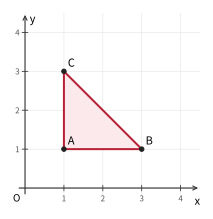
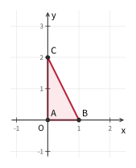
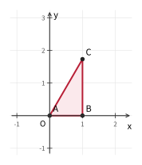

別冊練習問題 4 の解答 3点がつくる三角形の形
(1) 複素数平面上の3点 \(A(1 + i),\ B(3 + i),\ C(1 + 3 i)\) について、\(\dfrac{\gamma-\alpha}{\beta-\alpha}\) を計算し、△\(ABC\) がどんな三角形か答えよ。
比 \(\dfrac{\gamma-\alpha}{\beta-\alpha}\) を計算する
\[w=\dfrac{\gamma-\alpha}{\beta-\alpha}=\dfrac{2 i}{2}=i\]絶対値と偏角
\(|w|=\dfrac{AC}{AB},\quad \arg w=\angle BAC\)（\(A\) を中心に \(B\) から \(C\) へ回す角）。
\[|w|=1,\quad \arg w=\dfrac{\pi}{2}\]三角形の形
\[\angle A=90^\circ\text{ の直角二等辺三角形}\]
【答案】
\[\angle A=90^\circ\text{ の直角二等辺三角形}\]答
(2) 複素数平面上の3点 \(A(0),\ B(1),\ C(2 i)\) について、\(\dfrac{\gamma-\alpha}{\beta-\alpha}\) を計算し、△\(ABC\) がどんな三角形か答えよ。
比 \(\dfrac{\gamma-\alpha}{\beta-\alpha}\) を計算する
\[w=\dfrac{\gamma-\alpha}{\beta-\alpha}=\dfrac{2 i}{1}=2 i\]絶対値と偏角
\(|w|=\dfrac{AC}{AB},\quad \arg w=\angle BAC\)（\(A\) を中心に \(B\) から \(C\) へ回す角）。
\[|w|=2,\quad \arg w=\dfrac{\pi}{2}\]三角形の形
\[\angle A=90^\circ\text{ の直角三角形}\ (AC=2\,AB)\]
【答案】
\[\angle A=90^\circ\text{ の直角三角形}\ (AC=2\,AB)\]答
(3) 複素数平面上の3点 \(A(0),\ B(1),\ C(1 + \sqrt{3} i)\) について、\(\dfrac{\gamma-\alpha}{\beta-\alpha}\) を計算し、△\(ABC\) がどんな三角形か答えよ。
比 \(\dfrac{\gamma-\alpha}{\beta-\alpha}\) を計算する
\[w=\dfrac{\gamma-\alpha}{\beta-\alpha}=\dfrac{1 + \sqrt{3} i}{1}=1 + \sqrt{3} i\]絶対値と偏角
\(|w|=\dfrac{AC}{AB},\quad \arg w=\angle BAC\)（\(A\) を中心に \(B\) から \(C\) へ回す角）。
\[|w|=2,\quad \arg w=\dfrac{\pi}{3}\]三角形の形
\[\angle A=60^\circ,\ AC=2AB\text{ より }\angle B=90^\circ\text{ の直角三角形}\]
【答案】
\[\angle A=60^\circ,\ AC=2AB\text{ より }\angle B=90^\circ\text{ の直角三角形}\]答